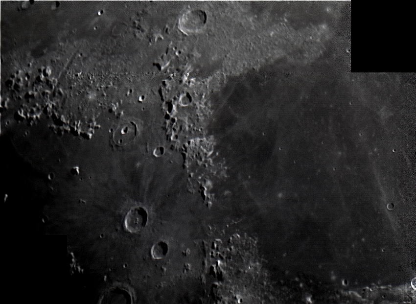

Astrophotos
A portfolio of night sky photos
This is a collection of photos of the night sky. I have taken most of these using my telescope (a Skywatcher 300P 12" Dobsonian) and one of two cameras, a Celestron Neximage 10 Planetary Camera or a Canon EOS 250D DSLR. I usually use stacking sofware like Registax to reduce the level of noise and bring out finer details. My favourite object to photograph is the Moon, thanks to the amount of detail you can see on the surface (and since people have been there!). The first astrophoto I ever took with the Neximage camera was of the Moon's Mare Imbrium region. The photos are (roughly) sorted by the object of interest.
Lunar Photos

Venus
The phases of the planet Venus change as it orbits the Sun. Here I have some pictures taken of the planet in the months leading up to its closest approach to Earth in June 2020.